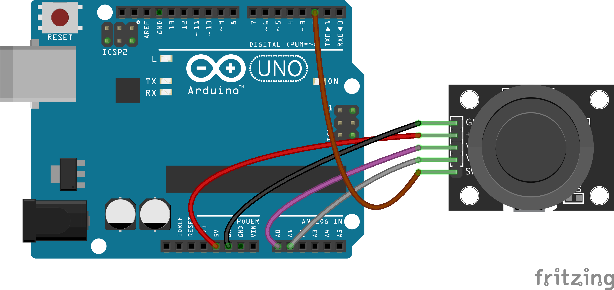

Appendix/Sensors & Such
The Joy Stick Module

const int xPin = A0;
const int yPin = A1;
const int buttonPin = 2;
void setup() {
// Set up your switch pin
pinMode(buttonPin, INPUT);
digitalWrite(buttonPin, HIGH);
Serial.begin(9600);
}
void loop() {
// Read your sensors and print values:
Serial.print("xVal = ");
Serial.print(analogRead(xPin));
Serial.print(" yVal = ");
Serial.print(analogRead(yPin));
Serial.print(" Button = ");
Serial.println(digitalRead(buttonPin));
// Note HIGH or 1 means not pressed for the button
delay(20);
}